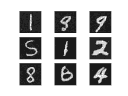

使用 PyTorch C++ 前端
PyTorch C++ 前端是 PyTorch 机器学习框架的纯 C++ 接口。 虽然 PyTorch 的主要接口自然是 Python，但此 Python API 位于强大的 C++ 代码库之上，提供基本的数据结构和功能，例如张量和自动微分。 C++ 前端公开了纯 C++ 11 API，该 API 使用机器学习训练和推理所需的工具扩展了此基础 C++ 代码库。 这包括用于神经网络建模的通用组件的内置集合； 使用自定义模块扩展此集合的 API； 一个流行的优化算法库，例如随机梯度下降； 具有 API 的并行数据加载器，用于定义和加载数据集； 序列化例程等。
本教程将引导您完成使用 C++ 前端训练模型的端到端示例。 具体来说，我们将训练 DCGAN （一种生成模型），以生成 MNIST 数字的图像。 虽然从概念上讲是一个简单的示例，但它足以使您对 PyTorch C++ 前端有个大概的了解，并且可以满足您训练更复杂模型的需求。 我们将从一些鼓舞人心的词开始，说明您为什么要使用 C++ 前端，然后直接深入定义和训练我们的模型。
TIP
观看来自 CppCon 2018 的简短演讲，获得有关 C++ 前端的快速（幽默）演示。
TIP
本笔记概述了 C++ 前端的组件和设计原理。
TIP
有关 PyTorch C++ 生态系统的文档，请访问这个页面。 您可以在此处找到高级描述以及 API 级文档。
动机
在我们开始 GAN 和 MNIST 数字的激动人心的旅程之前，让我们退后一步，讨论为什么要使用 C++ 前端而不是 Python。 我们（PyTorch 团队）创建了 C++ 前端，以便能够在无法使用 Python 或根本不适合该工具的环境中进行研究。 此类环境的示例包括：
- 低延迟系统：您可能希望在具有高每秒帧数和低延迟要求的纯 C++ 游戏引擎中进行强化学习研究。 与 Python 库相比，使用纯 C++ 库更适合这种环境。 由于 Python 解释器的缓慢性，Python 可能根本无法处理。
- 高度多线程环境：由于全局解释器锁定（GIL），Python 一次不能运行多个系统线程。 多处理是一种替代方法，但可伸缩性却不如它，并且存在很多缺点。 C++ 没有这样的约束，线程易于使用和创建。 需要重型并行化的模型，例如深度神经演化中使用的模型，可以从中受益。
- 现有 C++ 代码库：您可能是现有 C++ 应用的所有者，该应用从事从后端服务器中的网页服务到照片编辑软件中的 3D 图形渲染等所有工作，并且希望将机器学习方法集成到您的系统中。 C++ 前端使您可以继续使用 C++，并避免在 Python 和 C++ 之间来回绑定的麻烦，同时保留了传统 PyTorch（Python）体验的大部分灵活性和直观性。
C++ 前端无意与 Python 前端竞争。 它是对它的补充。 我们知道研究人员和工程师都喜欢 PyTorch，因为它具有简单，灵活和直观的 API。 我们的目标是确保您可以在所有可能的环境（包括上述环境）中利用这些核心设计原则。 如果这些场景中的一种很好地描述了您的用例，或者您只是感兴趣或好奇，请在以下段落中继续研究 C++ 前端。
TIP
C++ 前端试图提供一个与 Python 前端尽可能接近的 API。 如果您对 Python 前端有丰富的经验，并且问过自己“我如何使用 C++ 前端 X？”，请像在 Python 中那样编写代码，而且大多数情况下，相同的函数和方法也可以在 C++ 中使用，就像在 Python 中一样（只记得用双冒号替换点）。
编写基本应用
首先，编写一个最小的 C++ 应用，以验证我们是否在同一页面上了解我们的设置和构建环境。 首先，您需要获取 LibTorch 发行版的副本-我们现成的 zip 归档文件，其中打包了使用 C++ 前端所需的所有相关标头，库和 CMake 构建文件。 LibTorch 发行版可从 PyTorch 网站下载，适用于 Linux，MacOS 和 Windows。 本教程的其余部分将假定基本的 Ubuntu Linux 环境，但是您也可以在 MacOS 或 Windows 上随意进行操作。
TIP
有关安装 PyTorch 的 C++ 发行版的说明，更详细地描述了以下步骤。
TIP
在 Windows 上，调试和发行版本不兼容 ABI。 如果计划以调试模式构建项目，请尝试使用 LibTorch 的调试版本。 另外，请确保在下面的cmake --build .行中指定正确的配置。
第一步是通过从 PyTorch 网站获取的链接在本地下载 LibTorch 发行版。 对于普通的 Ubuntu Linux 环境，这意味着运行：
# If you need e.g. CUDA 9.0 support, please replace "cpu" with "cu90" in the URL below.
wget https://download.pytorch.org/libtorch/nightly/cpu/libtorch-shared-with-deps-latest.zip
unzip libtorch-shared-with-deps-latest.zip
接下来，让我们编写一个名为dcgan.cpp的小型 C++ 文件，其中包含torch/torch.h，现在只需打印出三乘三的标识矩阵即可：
#include <torch/torch.h>
#include <iostream>
int main() {
torch::Tensor tensor = torch::eye(3);
std::cout << tensor << std::endl;
}
稍后，为了构建这个小应用以及我们完整的训练脚本，我们将使用以下CMakeLists.txt文件：
cmake_minimum_required(VERSION 3.0 FATAL_ERROR)
project(dcgan)
find_package(Torch REQUIRED)
add_executable(dcgan dcgan.cpp)
target_link_libraries(dcgan "${TORCH_LIBRARIES}")
set_property(TARGET dcgan PROPERTY CXX_STANDARD 14)
注意
虽然 CMake 是 LibTorch 的推荐构建系统，但这并不是硬性要求。 您还可以使用 Visual Studio 项目文件，QMake，普通 Makefile 或您认为合适的任何其他构建环境。 但是，我们不为此提供现成的支持。
在上面的 CMake 文件中记下第 4 行：find_package(Torch REQUIRED)。 这指示 CMake 查找 LibTorch 库的构建配置。 为了使 CMake 知道在哪里找到这些文件，调用cmake时必须设置CMAKE_PREFIX_PATH。 在执行此操作之前，让我们就dcgan应用的以下目录结构达成一致：
此外，我将指向未压缩的 LibTorch 分布的路径称为/path/to/libtorch。 注意，它必须是绝对路径。 特别是，将CMAKE_PREFIX_PATH设置为../../libtorch之类的内容会以意想不到的方式中断。 而是写$PWD/../../libtorch以获取相应的绝对路径。 现在，我们准备构建我们的应用：
root@fa350df05ecf:/home# mkdir build
root@fa350df05ecf:/home# cd build
root@fa350df05ecf:/home/build# cmake -DCMAKE_PREFIX_PATH=/path/to/libtorch ..
-- The C compiler identification is GNU 5.4.0
-- The CXX compiler identification is GNU 5.4.0
-- Check for working C compiler: /usr/bin/cc
-- Check for working C compiler: /usr/bin/cc -- works
-- Detecting C compiler ABI info
-- Detecting C compiler ABI info - done
-- Detecting C compile features
-- Detecting C compile features - done
-- Check for working CXX compiler: /usr/bin/c++
-- Check for working CXX compiler: /usr/bin/c++ -- works
-- Detecting CXX compiler ABI info
-- Detecting CXX compiler ABI info - done
-- Detecting CXX compile features
-- Detecting CXX compile features - done
-- Looking for pthread.h
-- Looking for pthread.h - found
-- Looking for pthread_create
-- Looking for pthread_create - not found
-- Looking for pthread_create in pthreads
-- Looking for pthread_create in pthreads - not found
-- Looking for pthread_create in pthread
-- Looking for pthread_create in pthread - found
-- Found Threads: TRUE
-- Found torch: /path/to/libtorch/lib/libtorch.so
-- Configuring done
-- Generating done
-- Build files have been written to: /home/build
root@fa350df05ecf:/home/build# cmake --build . --config Release
Scanning dependencies of target dcgan
[ 50%] Building CXX object CMakeFiles/dcgan.dir/dcgan.cpp.o
[100%] Linking CXX executable dcgan
[100%] Built target dcgan
上面，我们首先在dcgan目录内创建一个build文件夹，进入该文件夹，运行cmake命令以生成必要的构建（Make）文件，最后通过运行cmake --build . --config Release成功编译该项目。 现在我们准备执行最小的二进制文件并完成有关基本项目配置的这一部分：
在我看来就像一个身份矩阵！
定义神经网络模型
现在我们已经配置了基本环境，我们可以深入研究本教程中更有趣的部分。 首先，我们将讨论如何在 C++ 前端中定义模块并与之交互。 我们将从基本的小规模示例模块开始，然后使用 C++ 前端提供的广泛的内置模块库来实现全面的 GAN。
模块 API 基础
与 Python 接口一致，基于 C++ 前端的神经网络由称为模块的可重用构建块组成。 有一个基础模块类，所有其他模块都从该基础类派生。 在 Python 中，此类为torch.nn.Module，在 C++ 中为torch::nn::Module。 除了实现模块封装的算法的forward()方法之外，模块通常还包含以下三种子对象中的任何一种：参数，缓冲区和子模块。
参数和缓冲区以张量的形式存储状态。 参数记录梯度，而缓冲区不记录。 参数通常是神经网络的可训练权重。 缓冲区的示例包括批量标准化的均值和方差。 为了重用特定的逻辑和状态块，PyTorch API 允许嵌套模块。 嵌套模块称为子模块。
参数，缓冲区和子模块必须显式注册。 注册后，可以使用parameters()或buffers()之类的方法来检索整个（嵌套）模块层次结构中所有参数的容器。 类似地，使用to(...)之类的方法，例如 to(torch::kCUDA)将所有参数和缓冲区从 CPU 移到 CUDA 内存，在整个模块层次结构上工作。
定义模块和注册参数
为了将这些词写成代码，让我们考虑一下用 Python 接口编写的简单模块：
import torch
class Net(torch.nn.Module):
def __init__(self, N, M):
super(Net, self).__init__()
self.W = torch.nn.Parameter(torch.randn(N, M))
self.b = torch.nn.Parameter(torch.randn(M))
def forward(self, input):
return torch.addmm(self.b, input, self.W)
在 C++ 中，它看起来像这样：
#include <torch/torch.h>
struct Net : torch::nn::Module {
Net(int64_t N, int64_t M) {
W = register_parameter("W", torch::randn({N, M}));
b = register_parameter("b", torch::randn(M));
}
torch::Tensor forward(torch::Tensor input) {
return torch::addmm(b, input, W);
}
torch::Tensor W, b;
};
就像在 Python 中一样，我们定义了一个名为Net的类（为简单起见，这里是struct而不是class），然后从模块基类派生它。 在构造器内部，我们使用torch::randn创建张量，就像在 Python 中使用torch.randn一样。 一个有趣的区别是我们如何注册参数。 在 Python 中，我们用torch.nn.Parameter类包装了张量，而在 C++ 中，我们不得不通过register_parameter方法传递张量。 这样做的原因是 Python API 可以检测到属性为torch.nn.Parameter类型并自动注册此类张量。 在 C++ 中，反射非常受限制，因此提供了一种更传统（且不太神奇）的方法。
注册子模块并遍历模块层次结构
以相同的方式我们可以注册参数，我们也可以注册子模块。 在 Python 中，将子模块分配为模块的属性时，会自动检测并注册这些子模块：
class Net(torch.nn.Module):
def __init__(self, N, M):
super(Net, self).__init__()
# Registered as a submodule behind the scenes
self.linear = torch.nn.Linear(N, M)
self.another_bias = torch.nn.Parameter(torch.rand(M))
def forward(self, input):
return self.linear(input) + self.another_bias
例如，这允许使用parameters()方法来递归访问模块层次结构中的所有参数：
>>> net = Net(4, 5)
>>> print(list(net.parameters()))
[Parameter containing:
tensor([0.0808, 0.8613, 0.2017, 0.5206, 0.5353], requires_grad=True), Parameter containing:
tensor([[-0.3740, -0.0976, -0.4786, -0.4928],
[-0.1434, 0.4713, 0.1735, -0.3293],
[-0.3467, -0.3858, 0.1980, 0.1986],
[-0.1975, 0.4278, -0.1831, -0.2709],
[ 0.3730, 0.4307, 0.3236, -0.0629]], requires_grad=True), Parameter containing:
tensor([ 0.2038, 0.4638, -0.2023, 0.1230, -0.0516], requires_grad=True)]
要在 C++ 中注册子模块，请使用恰当命名的register_module()方法注册类似torch::nn::Linear的模块：
struct Net : torch::nn::Module {
Net(int64_t N, int64_t M)
: linear(register_module("linear", torch::nn::Linear(N, M))) {
another_bias = register_parameter("b", torch::randn(M));
}
torch::Tensor forward(torch::Tensor input) {
return linear(input) + another_bias;
}
torch::nn::Linear linear;
torch::Tensor another_bias;
};
TIP
您可以在torch::nn命名空间的文档中找到可用的内置模块的完整列表，例如torch::nn::Linear，torch::nn::Dropout或torch::nn::Conv2d。
关于上述代码的一个微妙之处在于，为什么在构造器的初始值设定项列表中创建子模块，而在构造器的主体内部创建参数。 这是有充分的理由的，我们将在下面有关“C++ 前端所有权模型”的部分中对此进行介绍。 但是，最终结果是，就像 Python 中一样，我们可以递归访问模块树的参数。 调用parameters()返回一个std::vector<torch::Tensor>，我们可以对其进行迭代：
int main() {
Net net(4, 5);
for (const auto& p : net.parameters()) {
std::cout << p << std::endl;
}
}
打印：
root@fa350df05ecf:/home/build# ./dcgan
0.0345
1.4456
-0.6313
-0.3585
-0.4008
[ Variable[CPUFloatType]{5} ]
-0.1647 0.2891 0.0527 -0.0354
0.3084 0.2025 0.0343 0.1824
-0.4630 -0.2862 0.2500 -0.0420
0.3679 -0.1482 -0.0460 0.1967
0.2132 -0.1992 0.4257 0.0739
[ Variable[CPUFloatType]{5,4} ]
0.01 *
3.6861
-10.1166
-45.0333
7.9983
-20.0705
[ Variable[CPUFloatType]{5} ]
具有三个参数，就像在 Python 中一样。 为了也查看这些参数的名称，C++ API 提供了named_parameters()方法，该方法返回OrderedDict就像在 Python 中一样：
Net net(4, 5);
for (const auto& pair : net.named_parameters()) {
std::cout << pair.key() << ": " << pair.value() << std::endl;
}
我们可以再次执行以查看输出：
root@fa350df05ecf:/home/build# make && ./dcgan 11:13:48
Scanning dependencies of target dcgan
[ 50%] Building CXX object CMakeFiles/dcgan.dir/dcgan.cpp.o
[100%] Linking CXX executable dcgan
[100%] Built target dcgan
b: -0.1863
-0.8611
-0.1228
1.3269
0.9858
[ Variable[CPUFloatType]{5} ]
linear.weight: 0.0339 0.2484 0.2035 -0.2103
-0.0715 -0.2975 -0.4350 -0.1878
-0.3616 0.1050 -0.4982 0.0335
-0.1605 0.4963 0.4099 -0.2883
0.1818 -0.3447 -0.1501 -0.0215
[ Variable[CPUFloatType]{5,4} ]
linear.bias: -0.0250
0.0408
0.3756
-0.2149
-0.3636
[ Variable[CPUFloatType]{5} ]
注意
torch::nn::Module的文档包含在模块层次结构上运行的方法的完整列表。
在正向模式下运行网络
要使用 C++ 执行网络，我们只需调用我们自己定义的forward()方法：
打印类似：
root@fa350df05ecf:/home/build# ./dcgan
0.8559 1.1572 2.1069 -0.1247 0.8060
0.8559 1.1572 2.1069 -0.1247 0.8060
[ Variable[CPUFloatType]{2,5} ]
模块所有权
至此，我们知道了如何使用 C++ 定义模块，注册参数，注册子模块，通过parameters()之类的方法遍历模块层次结构并最终运行模块的forward()方法。 尽管在 C++ API 中还有很多方法，类和主题需要使用，但我将为您提供完整菜单的文档。 我们将在稍后实现 DCGAN 模型和端到端训练管道的过程中，涉及更多概念。 在我们这样做之前，让我简要介绍一下 C++ 前端为torch::nn::Module的子类提供的所有权模型。
在本次讨论中，所有权模型是指模块的存储和传递方式-确定特定模块实例的所有者或所有者。 在 Python 中，对象始终是动态分配的（在堆上），并且具有引用语义。 这是非常容易使用且易于理解的。 实际上，在 Python 中，您可以很大程度上忽略对象的位置以及如何引用它们，而将精力集中在完成事情上。
C++ 是一种较低级的语言，它在此领域提供了更多选择。 这增加了复杂性，并严重影响了 C++ 前端的设计和人体工程学。 特别是，对于 C++ 前端中的模块，我们可以选择使用值语义或引用语义。 第一种情况是最简单的，并且在到目前为止的示例中已进行了展示：模块对象在栈上分配，并在传递给函数时可以被复制，移动（使用std::move）或通过引用或指针获取：
struct Net : torch::nn::Module { };
void a(Net net) { }
void b(Net& net) { }
void c(Net* net) { }
int main() {
Net net;
a(net);
a(std::move(net));
b(net);
c(&net);
}
对于第二种情况-引用语义-我们可以使用std::shared_ptr。 引用语义的优势在于，就像在 Python 中一样，它减少了思考如何将模块传递给函数以及如何声明参数的认知开销（假设您在任何地方都使用shared_ptr）。
struct Net : torch::nn::Module {};
void a(std::shared_ptr<Net> net) { }
int main() {
auto net = std::make_shared<Net>();
a(net);
}
根据我们的经验，来自动态语言的研究人员非常喜欢引用语义而不是值语义，即使后者比 C++ 更“原生”。 同样重要的是要注意，torch::nn::Module的设计要与 Python API 的人体工程学保持紧密联系，因此要依靠共享所有权。 例如，采用我们较早的（此处为缩短的）Net定义：
struct Net : torch::nn::Module {
Net(int64_t N, int64_t M)
: linear(register_module("linear", torch::nn::Linear(N, M)))
{ }
torch::nn::Linear linear;
};
为了使用linear子模块，我们想将其直接存储在我们的类中。 但是，我们还希望模块基类了解并有权访问此子模块。 为此，它必须存储对此子模块的引用。 至此，我们已经达到了共享所有权的需要。 torch::nn::Module类和具体的Net类都需要引用该子模块。 因此，基类将模块存储为shared_ptr，因此具体类也必须存储。
可是等等！ 在上面的代码中我没有提到shared_ptr！ 这是为什么？ 好吧，因为std::shared_ptr<MyModule>实在令人难受。 为了保持研究人员的生产力，我们提出了一个精心设计的方案，以隐藏shared_ptr的提法-通常保留给值语义的好处-同时保留引用语义。 要了解它是如何工作的，我们可以看一下核心库中torch::nn::Linear模块的简化定义（完整定义在此处）：
struct LinearImpl : torch::nn::Module {
LinearImpl(int64_t in, int64_t out);
Tensor forward(const Tensor& input);
Tensor weight, bias;
};
TORCH_MODULE(Linear);
简而言之：该模块不是Linear，而是LinearImpl。 然后，宏TORCH_MODULE定义了实际的Linear类。 这个“生成的”类实际上是std::shared_ptr<LinearImpl>的包装。 它是一个包装器，而不是简单的typedef，因此，除其他事项外，构造器仍可按预期工作，即，您仍然可以编写torch::nn::Linear(3, 4)而不是std::make_shared<LinearImpl>(3, 4)。 我们将由宏创建的类称为模块所有者。 与（共享）指针一样，您可以使用箭头运算符（例如model->forward(...)）访问基础对象。 最终结果是一个所有权模型，该模型非常类似于 Python API。 引用语义成为默认语义，但是没有额外输入std::shared_ptr或std::make_shared。 对于我们的Net，使用模块持有人 API 如下所示：
struct NetImpl : torch::nn::Module {};
TORCH_MODULE(Net);
void a(Net net) { }
int main() {
Net net;
a(net);
}
这里有一个微妙的问题值得一提。 默认构造的std::shared_ptr为“空”，即包含空指针。 什么是默认构造的Linear或Net？ 好吧，这是一个棘手的选择。 我们可以说它应该是一个空（null）std::shared_ptr<LinearImpl>。 但是，请记住Linear(3, 4)与std::make_shared<LinearImpl>(3, 4)相同。 这意味着如果我们已确定Linear linear;应该为空指针，则将无法构造不采用任何构造器参数或都不使用所有缺省构造器的模块。 因此，在当前的 API 中，默认构造的模块持有人（如Linear()）将调用基础模块的默认构造器（LinearImpl()）。 如果基础模块没有默认构造器，则会出现编译器错误。 要构造空持有人，可以将nullptr传递给持有人的构造器。
实际上，这意味着您可以使用如先前所示的子模块，在初始化器列表中注册并构造该模块：
struct Net : torch::nn::Module {
Net(int64_t N, int64_t M)
: linear(register_module("linear", torch::nn::Linear(N, M)))
{ }
torch::nn::Linear linear;
};
或者，您可以先使用空指针构造持有人，然后在构造器中为其分配值（Python 爱好者更熟悉）：
struct Net : torch::nn::Module {
Net(int64_t N, int64_t M) {
linear = register_module("linear", torch::nn::Linear(N, M));
}
torch::nn::Linear linear{nullptr}; // construct an empty holder
};
结论：您应该使用哪种所有权模型–哪种语义？ C++ 前端的 API 最能支持模块所有者提供的所有权模型。 这种机制的唯一缺点是在模块声明下方多了一行样板。 也就是说，最简单的模型仍然是 C++ 模块简介中显示的值语义模型。 对于小的，简单的脚本，您也可以摆脱它。 但是，由于技术原因，您迟早会发现它并不总是受支持。 例如，序列化 API（torch::save和torch::load）仅支持模块支架（或普通shared_ptr）。 因此，建议使用模块持有人 API 和 C++ 前端定义模块，此后我们将在本教程中使用此 API。
定义 DCGAN 模块
现在，我们有必要的背景和简介来定义我们要在本文中解决的机器学习任务的模块。 回顾一下：我们的任务是从 MNIST 数据集生成数字图像。 我们想使用生成对抗网络（GAN）解决此任务。 特别是，我们将使用 DCGAN 架构，这是同类中最早，最简单的架构之一，但完全可以完成此任务。
TIP
什么是 GAN aGAN？
GAN 由两个不同的神经网络模型组成：生成器和判别器。 生成器从噪声分布中接收样本，其目的是将每个噪声样本转换为类似于目标分布的图像（在我们的情况下为 MNIST 数据集）。 判别器又从 MNIST 数据集接收实际图像，或从生成器接收假图像。 要求发出一个概率来判断特定图像的真实程度（接近1）或伪造（接近0）。 来自判别器的关于由生成器产生的图像有多真实的反馈被用来训练生成器。 判别器对真实性有多好的反馈将用于优化判别器。 从理论上讲，生成器和判别器之间的微妙平衡使它们连接起来得到改善，从而导致生成器生成与目标分布无法区分的图像，从而使判别器（那时）的敏锐眼睛冒出了散发0.5的真实和真实可能性。 假图片。 对我们来说，最终结果是一台接收噪声作为输入并生成逼真的数字图像作为其输出的机器。
生成器模块
我们首先定义生成器模块，该模块由一系列转置的 2D 卷积，批量归一化和 ReLU 激活单元组成。 我们在定义自己的模块的forward()方法中显式地（在功能上）在模块之间传递输入：
struct DCGANGeneratorImpl : nn::Module {
DCGANGeneratorImpl(int kNoiseSize)
: conv1(nn::ConvTranspose2dOptions(kNoiseSize, 256, 4)
.bias(false)),
batch_norm1(256),
conv2(nn::ConvTranspose2dOptions(256, 128, 3)
.stride(2)
.padding(1)
.bias(false)),
batch_norm2(128),
conv3(nn::ConvTranspose2dOptions(128, 64, 4)
.stride(2)
.padding(1)
.bias(false)),
batch_norm3(64),
conv4(nn::ConvTranspose2dOptions(64, 1, 4)
.stride(2)
.padding(1)
.bias(false))
{
// register_module() is needed if we want to use the parameters() method later on
register_module("conv1", conv1);
register_module("conv2", conv2);
register_module("conv3", conv3);
register_module("conv4", conv4);
register_module("batch_norm1", batch_norm1);
register_module("batch_norm2", batch_norm2);
register_module("batch_norm3", batch_norm3);
}
torch::Tensor forward(torch::Tensor x) {
x = torch::relu(batch_norm1(conv1(x)));
x = torch::relu(batch_norm2(conv2(x)));
x = torch::relu(batch_norm3(conv3(x)));
x = torch::tanh(conv4(x));
return x;
}
nn::ConvTranspose2d conv1, conv2, conv3, conv4;
nn::BatchNorm2d batch_norm1, batch_norm2, batch_norm3;
};
TORCH_MODULE(DCGANGenerator);
DCGANGenerator generator(kNoiseSize);
现在我们可以在DCGANGenerator上调用forward()将噪声样本映射到图像。
选择的特定模块，例如nn::ConvTranspose2d和nn::BatchNorm2d，遵循前面概述的结构。 kNoiseSize常数确定输入噪声向量的大小，并将其设置为100。 当然，超参数是通过研究生的血统发现的。
Attention
No grad students were harmed in the discovery of hyperparameters. They were fed Soylent regularly.
Note
A brief word on the way options are passed to built-in modules like Conv2d in the C++ frontend: Every module has some required options, like the number of features for BatchNorm2d. If you only need to configure the required options, you can pass them directly to the module’s constructor, like BatchNorm2d(128) or Dropout(0.5) or Conv2d(8, 4, 2) (for input channel count, output channel count, and kernel size). If, however, you need to modify other options, which are normally defaulted, such as bias for Conv2d, you need to construct and pass an options object. Every module in the C++ frontend has an associated options struct, called ModuleOptions where Module is the name of the module, like LinearOptions for Linear. This is what we do for the Conv2d modules above.
判别器模块
The discriminator is similarly a sequence of convolutions, batch normalizations and activations. However, the convolutions are now regular ones instead of transposed, and we use a leaky ReLU with an alpha value of 0.2 instead of a vanilla ReLU. Also, the final activation becomes a Sigmoid, which squashes values into a range between 0 and 1. We can then interpret these squashed values as the probabilities the discriminator assigns to images being real.
To build the discriminator, we will try something different: a Sequential module. Like in Python, PyTorch here provides two APIs for model definition: a functional one where inputs are passed through successive functions (e.g. the generator module example), and a more object-oriented one where we build a Sequential module containing the entire model as submodules. Using Sequential, the discriminator would look like:
nn::Sequential discriminator(
// Layer 1
nn::Conv2d(
nn::Conv2dOptions(1, 64, 4).stride(2).padding(1).bias(false)),
nn::LeakyReLU(nn::LeakyReLUOptions().negative_slope(0.2)),
// Layer 2
nn::Conv2d(
nn::Conv2dOptions(64, 128, 4).stride(2).padding(1).bias(false)),
nn::BatchNorm2d(128),
nn::LeakyReLU(nn::LeakyReLUOptions().negative_slope(0.2)),
// Layer 3
nn::Conv2d(
nn::Conv2dOptions(128, 256, 4).stride(2).padding(1).bias(false)),
nn::BatchNorm2d(256),
nn::LeakyReLU(nn::LeakyReLUOptions().negative_slope(0.2)),
// Layer 4
nn::Conv2d(
nn::Conv2dOptions(256, 1, 3).stride(1).padding(0).bias(false)),
nn::Sigmoid());
Tip
A Sequential module simply performs function composition. The output of the first submodule becomes the input of the second, the output of the third becomes the input of the fourth and so on.
加载数据
Now that we have defined the generator and discriminator model, we need some data we can train these models with. The C++ frontend, like the Python one, comes with a powerful parallel data loader. This data loader can read batches of data from a dataset (which you can define yourself) and provides many configuration knobs.
注意
While the Python data loader uses multi-processing, the C++ data loader is truly multi-threaded and does not launch any new processes.
The data loader is part of the C++ frontend’s data api, contained in the torch::data:: namespace. This API consists of a few different components:
- 数据加载器类，
- 用于定义数据集的 API，
- 用于定义转换的 API，可以将其应用于数据集，
- 用于定义采样器的 API，该采样器会生成用于对数据集建立索引的索引，
- 现有数据集，变换和采样器的库。
For this tutorial, we can use the MNIST dataset that comes with the C++ frontend. Let’s instantiate a torch::data::datasets::MNIST for this, and apply two transformations: First, we normalize the images so that they are in the range of -1 to +1 (from an original range of 0 to 1). Second, we apply the Stack collation, which takes a batch of tensors and stacks them into a single tensor along the first dimension:
auto dataset = torch::data::datasets::MNIST("./mnist")
.map(torch::data::transforms::Normalize<>(0.5, 0.5))
.map(torch::data::transforms::Stack<>());
Note that the MNIST dataset should be located in the ./mnist directory relative to wherever you execute the training binary from. You can use this script to download the MNIST dataset.
接下来，我们创建一个数据加载器并将其传递给该数据集。 为了创建一个新的数据加载器，我们使用torch::data::make_data_loader，它返回正确类型的std::unique_ptr（取决于数据集的类型，采样器的类型以及其他一些实现细节）：
数据加载器确实提供了很多选项。 您可以在这里检查全套。 例如，为了加快数据加载速度，我们可以增加工作器的数量。 默认数字为零，这意味着将使用主线程。 如果将workers设置为2，将产生两个线程并发加载数据。 我们还应该将批量大小从其默认值1增加到更合理的值，例如64（kBatchSize的值）。 因此，让我们创建一个DataLoaderOptions对象并设置适当的属性：
auto data_loader = torch::data::make_data_loader(
std::move(dataset),
torch::data::DataLoaderOptions().batch_size(kBatchSize).workers(2));
现在，我们可以编写一个循环来加载批量数据，目前我们仅将其打印到控制台：
for (torch::data::Example<>& batch : *data_loader) {
std::cout << "Batch size: " << batch.data.size(0) << " | Labels: ";
for (int64_t i = 0; i < batch.data.size(0); ++i) {
std::cout << batch.target[i].item<int64_t>() << " ";
}
std::cout << std::endl;
}
在这种情况下，数据加载器返回的类型为torch::data::Example。 此类型是一种简单的结构，其中的data字段用于数据，而target字段用于标签。 因为我们之前应用了Stack归类，所以数据加载器仅返回一个这样的示例。 如果我们未应用排序规则，则数据加载器将改为生成std::vector<torch::data::Example<>>，批量中每个示例包含一个元素。
如果重建并运行此代码，则应看到类似以下内容的内容：
root@fa350df05ecf:/home/build# make
Scanning dependencies of target dcgan
[ 50%] Building CXX object CMakeFiles/dcgan.dir/dcgan.cpp.o
[100%] Linking CXX executable dcgan
[100%] Built target dcgan
root@fa350df05ecf:/home/build# make
[100%] Built target dcgan
root@fa350df05ecf:/home/build# ./dcgan
Batch size: 64 | Labels: 5 2 6 7 2 1 6 7 0 1 6 2 3 6 9 1 8 4 0 6 5 3 3 0 4 6 6 6 4 0 8 6 0 6 9 2 4 0 2 8 6 3 3 2 9 2 0 1 4 2 3 4 8 2 9 9 3 5 8 0 0 7 9 9
Batch size: 64 | Labels: 2 2 4 7 1 2 8 8 6 9 0 2 2 9 3 6 1 3 8 0 4 4 8 8 8 9 2 6 4 7 1 5 0 9 7 5 4 3 5 4 1 2 8 0 7 1 9 6 1 6 5 3 4 4 1 2 3 2 3 5 0 1 6 2
Batch size: 64 | Labels: 4 5 4 2 1 4 8 3 8 3 6 1 5 4 3 6 2 2 5 1 3 1 5 0 8 2 1 5 3 2 4 4 5 9 7 2 8 9 2 0 6 7 4 3 8 3 5 8 8 3 0 5 8 0 8 7 8 5 5 6 1 7 8 0
Batch size: 64 | Labels: 3 3 7 1 4 1 6 1 0 3 6 4 0 2 5 4 0 4 2 8 1 9 6 5 1 6 3 2 8 9 2 3 8 7 4 5 9 6 0 8 3 0 0 6 4 8 2 5 4 1 8 3 7 8 0 0 8 9 6 7 2 1 4 7
Batch size: 64 | Labels: 3 0 5 5 9 8 3 9 8 9 5 9 5 0 4 1 2 7 7 2 0 0 5 4 8 7 7 6 1 0 7 9 3 0 6 3 2 6 2 7 6 3 3 4 0 5 8 8 9 1 9 2 1 9 4 4 9 2 4 6 2 9 4 0
Batch size: 64 | Labels: 9 6 7 5 3 5 9 0 8 6 6 7 8 2 1 9 8 8 1 1 8 2 0 7 1 4 1 6 7 5 1 7 7 4 0 3 2 9 0 6 6 3 4 4 8 1 2 8 6 9 2 0 3 1 2 8 5 6 4 8 5 8 6 2
Batch size: 64 | Labels: 9 3 0 3 6 5 1 8 6 0 1 9 9 1 6 1 7 7 4 4 4 7 8 8 6 7 8 2 6 0 4 6 8 2 5 3 9 8 4 0 9 9 3 7 0 5 8 2 4 5 6 2 8 2 5 3 7 1 9 1 8 2 2 7
Batch size: 64 | Labels: 9 1 9 2 7 2 6 0 8 6 8 7 7 4 8 6 1 1 6 8 5 7 9 1 3 2 0 5 1 7 3 1 6 1 0 8 6 0 8 1 0 5 4 9 3 8 5 8 4 8 0 1 2 6 2 4 2 7 7 3 7 4 5 3
Batch size: 64 | Labels: 8 8 3 1 8 6 4 2 9 5 8 0 2 8 6 6 7 0 9 8 3 8 7 1 6 6 2 7 7 4 5 5 2 1 7 9 5 4 9 1 0 3 1 9 3 9 8 8 5 3 7 5 3 6 8 9 4 2 0 1 2 5 4 7
Batch size: 64 | Labels: 9 2 7 0 8 4 4 2 7 5 0 0 6 2 0 5 9 5 9 8 8 9 3 5 7 5 4 7 3 0 5 7 6 5 7 1 6 2 8 7 6 3 2 6 5 6 1 2 7 7 0 0 5 9 0 0 9 1 7 8 3 2 9 4
Batch size: 64 | Labels: 7 6 5 7 7 5 2 2 4 9 9 4 8 7 4 8 9 4 5 7 1 2 6 9 8 5 1 2 3 6 7 8 1 1 3 9 8 7 9 5 0 8 5 1 8 7 2 6 5 1 2 0 9 7 4 0 9 0 4 6 0 0 8 6
...
这意味着我们能够成功地从 MNIST 数据集中加载数据。
编写训练循环
现在，让我们完成示例的算法部分，并实现生成器和判别器之间的精妙舞蹈。 首先，我们将创建两个优化器，一个用于生成器，一个用于判别器。 我们使用的优化程序实现了 Adam 算法：
torch::optim::Adam generator_optimizer(
generator->parameters(), torch::optim::AdamOptions(2e-4).beta1(0.5));
torch::optim::Adam discriminator_optimizer(
discriminator->parameters(), torch::optim::AdamOptions(5e-4).beta1(0.5));
注意
在撰写本文时，C++ 前端提供了实现 Adagrad，Adam，LBBFG，RMSprop 和 SGD 的优化器。 文档具有最新列表。
接下来，我们需要更新我们的训练循环。 我们将添加一个外循环以在每个周期耗尽数据加载器，然后编写 GAN 训练代码：
for (int64_t epoch = 1; epoch <= kNumberOfEpochs; ++epoch) {
int64_t batch_index = 0;
for (torch::data::Example<>& batch : *data_loader) {
// Train discriminator with real images.
discriminator->zero_grad();
torch::Tensor real_images = batch.data;
torch::Tensor real_labels = torch::empty(batch.data.size(0)).uniform_(0.8, 1.0);
torch::Tensor real_output = discriminator->forward(real_images);
torch::Tensor d_loss_real = torch::binary_cross_entropy(real_output, real_labels);
d_loss_real.backward();
// Train discriminator with fake images.
torch::Tensor noise = torch::randn({batch.data.size(0), kNoiseSize, 1, 1});
torch::Tensor fake_images = generator->forward(noise);
torch::Tensor fake_labels = torch::zeros(batch.data.size(0));
torch::Tensor fake_output = discriminator->forward(fake_images.detach());
torch::Tensor d_loss_fake = torch::binary_cross_entropy(fake_output, fake_labels);
d_loss_fake.backward();
torch::Tensor d_loss = d_loss_real + d_loss_fake;
discriminator_optimizer.step();
// Train generator.
generator->zero_grad();
fake_labels.fill_(1);
fake_output = discriminator->forward(fake_images);
torch::Tensor g_loss = torch::binary_cross_entropy(fake_output, fake_labels);
g_loss.backward();
generator_optimizer.step();
std::printf(
"\r[%2ld/%2ld][%3ld/%3ld] D_loss: %.4f | G_loss: %.4f",
epoch,
kNumberOfEpochs,
++batch_index,
batches_per_epoch,
d_loss.item<float>(),
g_loss.item<float>());
}
}
上面，我们首先在真实图像上评估判别器，为此应为其分配较高的概率。 为此，我们使用torch::empty(batch.data.size(0)).uniform_(0.8, 1.0)作为目标概率。
注意
我们选择均匀分布在 0.8 到 1.0 之间的随机值，而不是各处的 1.0，以使判别器训练更可靠。 此技巧称为标签平滑。
在评估判别器之前，我们将其参数的梯度归零。 计算完损失后，我们通过调用d_loss.backward()来计算新的梯度，从而在网络中反向传播。 我们对虚假图像重复此步骤。 我们不使用数据集中的图像，而是让生成器通过为它提供一批随机噪声来为此创建伪造图像。 然后，我们将这些伪造图像转发给判别器。 这次，我们希望判别器发出低概率，最好是全零。 一旦计算了一批真实图像和一批伪造图像的判别器损失，我们就可以一步一步地进行判别器的优化程序，以更新其参数。
为了训练生成器，我们再次首先将其梯度归零，然后在伪图像上重新评估判别器。 但是，这一次，我们希望判别器将概率分配为非常接近的概率，这将表明生成器可以生成使判别器认为它们实际上是真实的图像（来自数据集）。 为此，我们用全部填充fake_labels张量。 最后，我们逐步使用生成器的优化器来更新其参数。
现在，我们应该准备在 CPU 上训练我们的模型。 我们还没有任何代码可以捕获状态或示例输出，但是我们稍后会添加。 现在，让我们观察一下我们的模型正在做某事 –我们稍后将根据生成的图像来验证这是否有意义。 重建和运行应打印如下内容：
root@3c0711f20896:/home/build# make && ./dcgan
Scanning dependencies of target dcgan
[ 50%] Building CXX object CMakeFiles/dcgan.dir/dcgan.cpp.o
[100%] Linking CXX executable dcgan
[100%] Built target dcga
[ 1/10][100/938] D_loss: 0.6876 | G_loss: 4.1304
[ 1/10][200/938] D_loss: 0.3776 | G_loss: 4.3101
[ 1/10][300/938] D_loss: 0.3652 | G_loss: 4.6626
[ 1/10][400/938] D_loss: 0.8057 | G_loss: 2.2795
[ 1/10][500/938] D_loss: 0.3531 | G_loss: 4.4452
[ 1/10][600/938] D_loss: 0.3501 | G_loss: 5.0811
[ 1/10][700/938] D_loss: 0.3581 | G_loss: 4.5623
[ 1/10][800/938] D_loss: 0.6423 | G_loss: 1.7385
[ 1/10][900/938] D_loss: 0.3592 | G_loss: 4.7333
[ 2/10][100/938] D_loss: 0.4660 | G_loss: 2.5242
[ 2/10][200/938] D_loss: 0.6364 | G_loss: 2.0886
[ 2/10][300/938] D_loss: 0.3717 | G_loss: 3.8103
[ 2/10][400/938] D_loss: 1.0201 | G_loss: 1.3544
[ 2/10][500/938] D_loss: 0.4522 | G_loss: 2.6545
...
移至 GPU
虽然我们当前的脚本可以在 CPU 上正常运行，但是我们都知道卷积在 GPU 上要快得多。 让我们快速讨论如何将训练转移到 GPU 上。 为此，我们需要做两件事：将 GPU 设备规范传递给我们分配给自己的张量，并通过to()方法将所有其他张量明确复制到 C++ 前端中的所有张量和模块上。 实现这两者的最简单方法是在我们的训练脚本的顶层创建torch::Device的实例，然后将该设备传递给张量工厂函数，例如torch::zeros和to()方法。 我们可以从使用 CPU 设备开始：
新的张量分配，例如
应该更新为以device作为最后一个参数：
对于那些不在我们手中的张量，例如来自 MNIST 数据集的张量，我们必须插入显式的to()调用。 这表示
变成
并且我们的模型参数也应该移到正确的设备上：
注意
如果张量已经存在于提供给to()的设备上，则该调用为空操作。 没有多余的副本。
至此，我们已经使之前的 CPU 代码更加明确了。 但是，现在将设备更改为 CUDA 设备也非常容易：
现在，所有张量都将驻留在 GPU 上，并调用快速 CUDA 内核进行所有操作，而无需我们更改任何下游代码。 如果我们想指定一个特定的设备索引，则可以将其作为第二个参数传递给Device构造器。 如果我们希望不同的张量驻留在不同的设备上，则可以传递单独的设备实例（例如，一个在 CUDA 设备 0 上，另一个在 CUDA 设备 1 上）。 我们甚至可以动态地进行此配置，这通常对于使我们的训练脚本更具可移植性很有用：
torch::Device device = torch::kCPU;
if (torch::cuda::is_available()) {
std::cout << "CUDA is available! Training on GPU." << std::endl;
device = torch::kCUDA;
}
甚至
检查点和恢复训练状态
我们应该对训练脚本进行的最后扩充是定期保存模型参数的状态，优化器的状态以及一些生成的图像样本。 如果我们的计算机在训练过程中崩溃，则前两个将使我们能够恢复训练状态。 对于长期的训练过程，这是绝对必要的。 幸运的是，C++ 前端提供了一个 API，用于对模型和优化器状态以及单个张量进行序列化和反序列化。
为此的核心 API 是torch::save(thing,filename)和torch::load(thing,filename)，其中thing可以是torch::nn::Module子类，也可以是优化脚本实例，例如我们在训练脚本中拥有的Adam对象。 让我们更新训练循环，以一定间隔检查模型和优化器状态：
if (batch_index % kCheckpointEvery == 0) {
// Checkpoint the model and optimizer state.
torch::save(generator, "generator-checkpoint.pt");
torch::save(generator_optimizer, "generator-optimizer-checkpoint.pt");
torch::save(discriminator, "discriminator-checkpoint.pt");
torch::save(discriminator_optimizer, "discriminator-optimizer-checkpoint.pt");
// Sample the generator and save the images.
torch::Tensor samples = generator->forward(torch::randn({8, kNoiseSize, 1, 1}, device));
torch::save((samples + 1.0) / 2.0, torch::str("dcgan-sample-", checkpoint_counter, ".pt"));
std::cout << "\n-> checkpoint " << ++checkpoint_counter << '\n';
}
其中kCheckpointEvery是设置为类似于100之类的整数，用于每批100批量检查点，而checkpoint_counter是每次创建检查点时都会增加的计数器。
要恢复训练状态，可以在创建所有模型和优化器之后但在训练循环之前添加如下代码：
torch::optim::Adam generator_optimizer(
generator->parameters(), torch::optim::AdamOptions(2e-4).beta1(0.5));
torch::optim::Adam discriminator_optimizer(
discriminator->parameters(), torch::optim::AdamOptions(2e-4).beta1(0.5));
if (kRestoreFromCheckpoint) {
torch::load(generator, "generator-checkpoint.pt");
torch::load(generator_optimizer, "generator-optimizer-checkpoint.pt");
torch::load(discriminator, "discriminator-checkpoint.pt");
torch::load(
discriminator_optimizer, "discriminator-optimizer-checkpoint.pt");
}
int64_t checkpoint_counter = 0;
for (int64_t epoch = 1; epoch <= kNumberOfEpochs; ++epoch) {
int64_t batch_index = 0;
for (torch::data::Example<>& batch : *data_loader) {
检查生成的图像
我们的训练脚本现已完成。 我们准备在 CPU 或 GPU 上训练 GAN。 为了检查我们训练过程的中间输出，为此我们添加了将代码样本定期保存到"dcgan-sample-xxx.pt"文件的代码，我们可以编写一个小的 Python 脚本来加载张量并使用 matplotlib 显示它们：
from __future__ import print_function
from __future__ import unicode_literals
import argparse
import matplotlib.pyplot as plt
import torch
parser = argparse.ArgumentParser()
parser.add_argument("-i", "--sample-file", required=True)
parser.add_argument("-o", "--out-file", default="out.png")
parser.add_argument("-d", "--dimension", type=int, default=3)
options = parser.parse_args()
module = torch.jit.load(options.sample_file)
images = list(module.parameters())[0]
for index in range(options.dimension * options.dimension):
image = images[index].detach().cpu().reshape(28, 28).mul(255).to(torch.uint8)
array = image.numpy()
axis = plt.subplot(options.dimension, options.dimension, 1 + index)
plt.imshow(array, cmap="gray")
axis.get_xaxis().set_visible(False)
axis.get_yaxis().set_visible(False)
plt.savefig(options.out_file)
print("Saved ", options.out_file)
现在，让我们训练模型约 30 个周期：
root@3c0711f20896:/home/build# make && ./dcgan 10:17:57
Scanning dependencies of target dcgan
[ 50%] Building CXX object CMakeFiles/dcgan.dir/dcgan.cpp.o
[100%] Linking CXX executable dcgan
[100%] Built target dcgan
CUDA is available! Training on GPU.
[ 1/30][200/938] D_loss: 0.4953 | G_loss: 4.0195
-> checkpoint 1
[ 1/30][400/938] D_loss: 0.3610 | G_loss: 4.8148
-> checkpoint 2
[ 1/30][600/938] D_loss: 0.4072 | G_loss: 4.36760
-> checkpoint 3
[ 1/30][800/938] D_loss: 0.4444 | G_loss: 4.0250
-> checkpoint 4
[ 2/30][200/938] D_loss: 0.3761 | G_loss: 3.8790
-> checkpoint 5
[ 2/30][400/938] D_loss: 0.3977 | G_loss: 3.3315
...
-> checkpoint 120
[30/30][938/938] D_loss: 0.3610 | G_loss: 3.8084
并在图中显示图像：
应该看起来像这样：

数字！ 万岁！ 现在，事情就在您的球场上了：您可以改进模型以使数字看起来更好吗？
总结
希望本教程为您提供了 PyTorch C++ 前端的可摘要。 像 PyTorch 这样的机器学习库必然具有非常广泛的 API。 因此，有许多概念我们没有时间或空间来讨论。 但是，我建议您尝试一下 API，并在遇到问题时查阅我们的文档，尤其是库 API 部分。 另外，请记住，只要我们能够做到，就可以期望 C++ 前端遵循 Python 前端的设计和语义，因此您可以利用这一事实来提高学习率。
TIP
与往常一样，如果您遇到任何问题或疑问，可以使用我们的论坛或 GitHub ISSUE 进行联系。